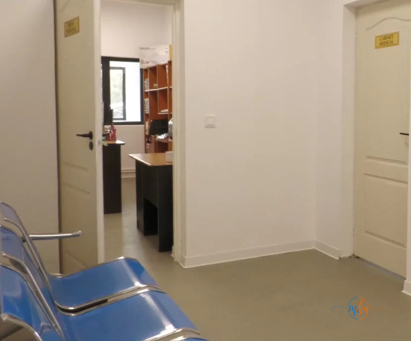
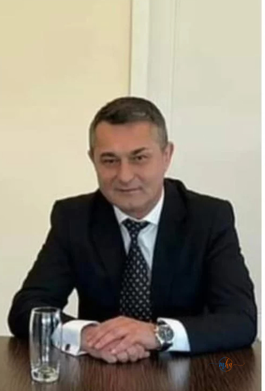
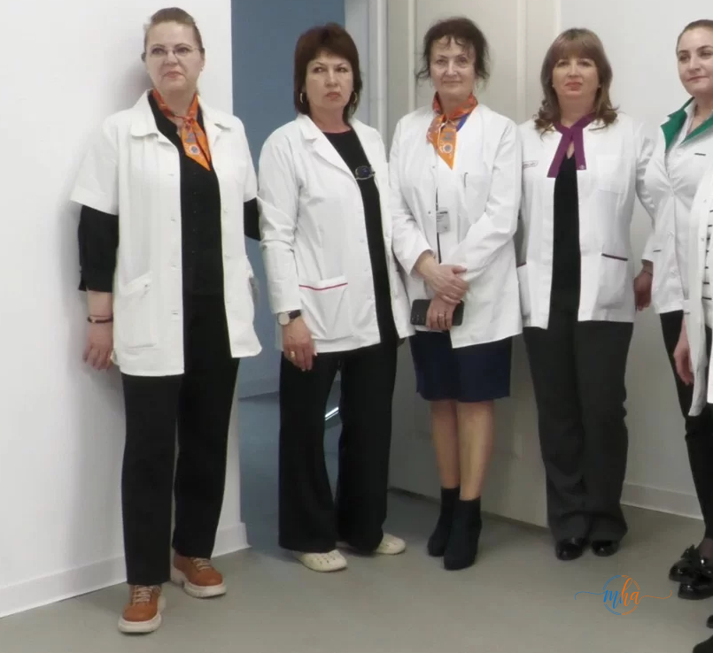
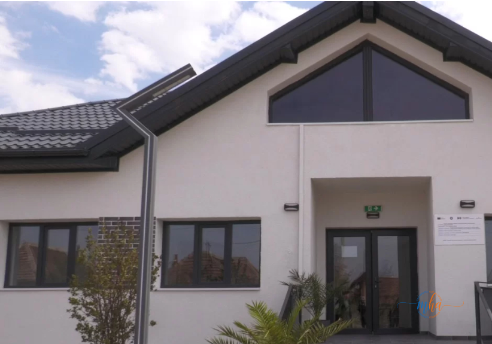

Comuna Șimian din județul Mehedinți are de acum un centru comunitar integrat modern, inaugurat recent și pus la dispoziția locuitorilor prin efortul administrației locale și cu sprijinul fondurilor europene. Noul centru, amplasat pe strada Pandurilor, oferă servicii medicale și sociale gratuite pentru toți locuitorii comunei, reprezentând o schimbare reală în calitatea vieții din această zonă.
Investiția a fost finalizată de Primăria Șimian prin Programul Național de Redresare și Reziliență (PNRR) și marchează o nouă etapă în dezvoltarea comunității locale. Este a doua fază a proiectului de extindere a serviciilor comunitare integrate inițiate de administrația comunei.
⚔ Centrul comunitar Șimian — date esențiale
- Locație: Strada Pandurilor, comuna Șimian, Mehedinți
- Program de finanțare: PNRR — Programul Național de Redresare și Reziliență
- Beneficiar: Primăria comunei Șimian
- Primar: Constantin Trașcă
- Servicii oferite: medicale și sociale, gratuite pentru locuitori
- Program de funcționare: luni–vineri, 08:00–16:00
Ce servicii oferă noul centru comunitar
Centrul comunitar de la Șimian pune la dispoziția localnicilor o gamă largă de servicii medicale și sociale gratuite, accesibile direct în comună. Până acum, locuitorii erau nevoiți să parcurgă drumul până la Drobeta-Turnu Severin pentru consultații sau investigații medicale suplimentare — o situație care punea presiune atât financiar, cât și logistic asupra familiilor din zonă.
Prin intermediul noului centru, rezidentii din Șimian pot beneficia de consultații medicale de specialitate, servicii de asistență socială și sprijin pentru categoriile vulnerabile, toate într-un spațiu modern, dotat corespunzător și ușor accesibil.
„Suntem aici să răspundem nevoilor comunității. Investițiile în sănătate sunt pentru noi o prioritate." — Constantin Trașcă, primarul comunei Șimian
Reacția locuitorilor: „Nu mai trebuie să mergem la Severin"
Inaugurarea centrului a fost primită cu entuziasm de către locuitorii comunei, care au așteptat mult timp accesul la servicii medicale de calitate chiar în zona lor.
„Era necesară această investiție. Pentru consultații și investigații suplimentare mergeam mereu la Severin." — Locuitor al comunei Șimian
„Chiar am nevoie! Suntem tot mai mulți locuitori în această comună care avem nevoie de astfel de investiții!" — Alt locuitor al comunei Șimian

Interiorul centrului — dotat modern

Primarul Constantin Trașcă la inaugurare
Un pas important pentru dezvoltarea comunei Șimian
Centrul funcționează de luni până vineri, între orele 08:00 și 16:00, și reprezintă un pas semnificativ în dezvoltarea pe termen lung a comunei Șimian. Prin accesul facilitat la servicii medicale și sociale, administrația locală urmărește îmbunătățirea calității vieții tuturor cetățenilor, indiferent de vârstă sau situație socială.
Investiția demonstrează că fondurile europene disponibile prin PNRR pot fi accesate și de comunitățile mici din mediul rural, generând beneficii reale și imediate pentru locuitori. Județul Mehedinți continuă astfel să atragă finanțări europene pentru proiecte cu impact direct asupra vieții cetățenilor.

Echipa centrului comunitar Șimian

Centrul comunitar — vedere exterior
PNRR — sursă de finanțare pentru comunitățile mehedinţene
Programul Național de Redresare și Reziliență continuă să finanțeze proiecte de infrastructură socială și medicală în județele din România. Centrul comunitar de la Șimian se alătură altor investiții recente din județul Mehedinți, demonstrând că administrațiile locale pot accesa cu succes fonduri europene pentru proiecte cu impact real asupra comunităților.
Prin astfel de investiții, comuna Șimian se înscrie pe traiectoria dezvoltării durabile, oferind locuitorilor săi servicii de calitate comparabile cu cele din mediul urban, fără a fi nevoie de deplasări costisitoare și obositoare la oraș.
Sursa: Primăria comunei Șimian / Redactia MehedintiAzi.ro